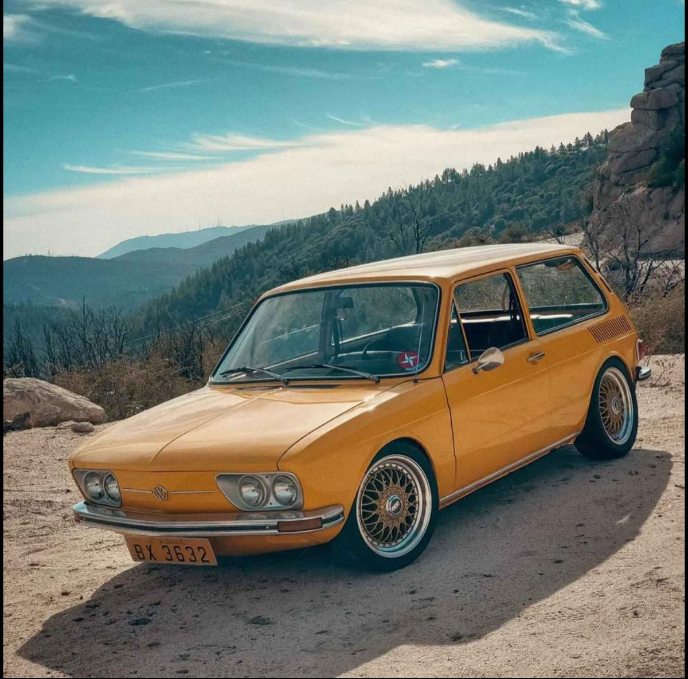

A Volkswagen Brasília foi lançada em 1973 com o objetivo de oferecer mais espaço e conforto para as famílias brasileiras. Com mecânica confiável e manutenção simples, o modelo se tornou um grande sucesso de vendas e marcou uma geração de motoristas. Atualmente, a Brasília é considerada um dos carros mais importantes da história da Volkswagen no Brasil. Seu design característico e sua popularidade fizeram dela um verdadeiro ícone da indústria automobilística nacional.
Voltar para a Página Inicial